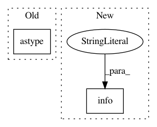

58086fa0a4fdd7c72a9ca51746a754fbd6644b91,models/common/distributed_executor.py,DistributedExecutor,_run_evaluation,#DistributedExecutor#Any#Any#Any#Any#Any#Any#,358
Before Change
for _ in range(eval_steps):
test_step(strategy, model, metric, test_iterator)
metric_result = metric.result().numpy().astype(float)
logging.info("Step: [%d] Validation metric = %f", current_training_step,
metric_result)
return metric_result
After Change
"Both test_iterator (%s) and metrics (%s) must not be None.",
test_iterator, metric)
return None
logging.info("Running evaluation after step: %s.", current_training_step)
test_step = self._create_test_step()
for _ in range(eval_steps):
test_step(strategy, model, metric, test_iterator)
In pattern: SUPERPATTERN
Frequency: 4
Non-data size: 2
Instances
Project Name: tensorflow/tpu
Commit Name: 58086fa0a4fdd7c72a9ca51746a754fbd6644b91
Time: 2019-08-06
Author: gardener@tensorflow.org
File Name: models/common/distributed_executor.py
Class Name: DistributedExecutor
Method Name: _run_evaluation
Project Name: ilastik/ilastik
Commit Name: 96008235c70ebd1fed4f65cb17b0e99046f99396
Time: 2019-04-25
Author: c.pape@gmx.net
File Name: ilastik/workflows/carving/opPreprocessing.py
Class Name: OpSimpleBlockwiseWatershed
Method Name: execute
Project Name: tensorflow/tpu
Commit Name: 0789cc08dd92a43422469fc4973ecc972d032421
Time: 2019-08-06
Author: yeqing@google.com
File Name: models/common/distributed_executor.py
Class Name: DistributedExecutor
Method Name: _run_evaluation
Project Name: etal/cnvkit
Commit Name: e2ab4ccd6cb5e306c66182ac8ff1ad2d8183df1c
Time: 2016-10-07
Author: eric.talevich@gmail.com
File Name: cnvlib/gary.py
Class Name: GenomicArray
Method Name: _make_blank